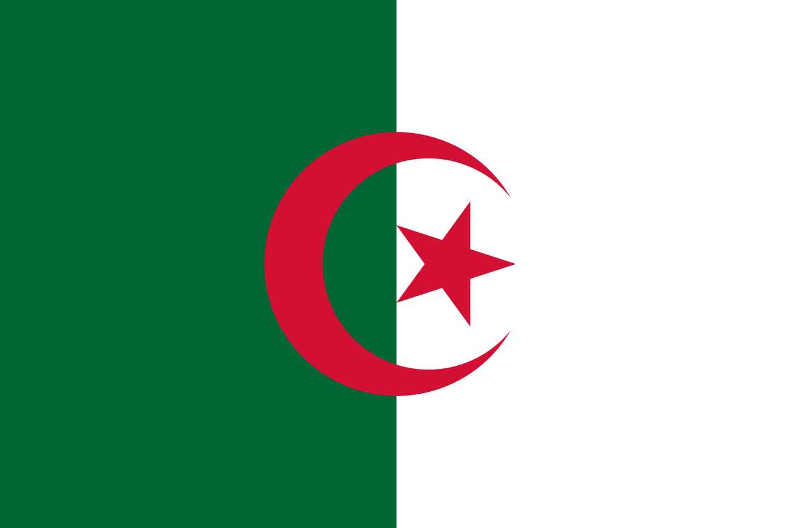

| Nom: | Boussouf |
| Prénom: | Abdelhafid |
| Date de naissance: | 17 Aout 1926 |
| Place de naissance: | Mila, Algérie  |
| Date de décèes: | 31 Décembre 1980 (à 54 ans) |
| Place de décès: | Paris, France |
| Nationalité: | Algérien |
Abdelhafid Boussouf, surnommé aussi « L'Homme de la virgule », né le 17 août 1926 à Mila dans le Nord-Constantinois (Algérie) et mort le 31 décembre 1980 à Paris, est un militant nationaliste algérien durant la guerre d'Algérie. Il joue un rôle décisif dans la naissance des services de renseignements algériens.
Abdelhafid Boussouf est né dans la ville de Mila, d'un père appelé Khalil et d'une mère nommée Zahira Saud. Sa famille pauvre pratiquait l'agriculture. Boussouf entre à l'âge de huit ans environ à l'école française, où il pratique ses études et obtient le brevet primaire.
Il a rejoint les rangs du Parti du peuple algérien dans la ville de Mila et a créé des cellules avec un groupe important de militants de la ville, dont Lakhdar bin Toubal et Anan Darraji. Bousouf avait l'habitude de rencontrer les combattants dans sa maison, qui était un refuge pour les divers visages révolutionnaires et politiques qui ont déclenché la révolution de 1954. En 1944, il se rend à Constantine pour travailler dans une machine à laver Elle appartenait à un centenaire. Lorsqu'il rejoint le Parti du peuple algérien à Constantine, il fait la connaissance de Mohamed Boudiaf, Larbi Ben M'hidi, Ben Toubal, etc.
Au déclenchement de la révolution algérienne, il est nommé adjoint de Larbi Ben M`hidi dans la cinquième circonscription d'Oran, chargé de l'arrondissement de Tlemcen. Puis, en 1950, il se tourne vers le travail secret, d'abord dans la ville de Skikda, puis dans la région d'Oran, où il n'est ni connu des intérêts français ni poursuivi par eux. Après la conférence de Soumam, il devient membre du Conseil national de la révolution algérienne, nommé ministre des communications publiques et de l'armement dans le gouvernement intérimaire.Il a fondé le service de renseignement algérien en 1957 et a joué un rôle majeur dans la formation des cadres dans ce domaine, jusqu'à ce qu'il soit appelé le père du renseignement algérien. Il a pu collecter 8 milliards d'anciens francs français à l'époque de la révolution algérienne grâce à son habileté. et rusé, en échange de son commerce dans les enquêtes internationales, où il vendait des informations aux États-Unis, à l'Union soviétique, à la Chine, au Japon.
Il est écarté du pouvoir en août 1962 par Ben Bella et Boumediene. Il sert de conseiller pour l'équipement des forces armées de Hafez el-Assad et de Saddam Hussein. Il meurt le 31 décembre 1980 à Paris. Son nom a été donné à l'université de sa ville natale Mila et l'Ecole Nationale Superieur de Telecomminication et TIC Oran